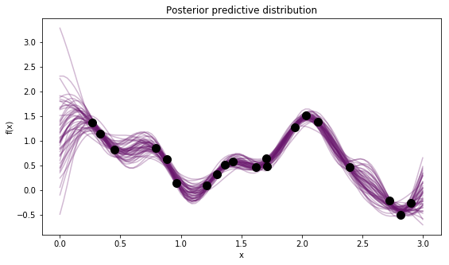
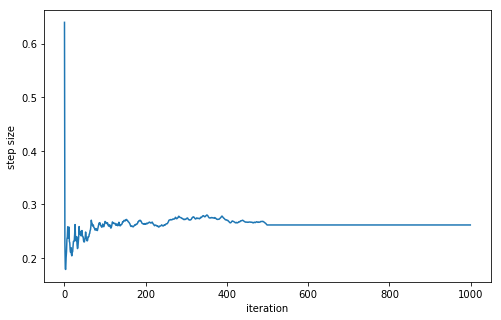
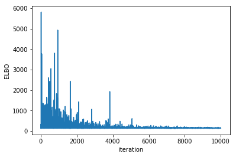
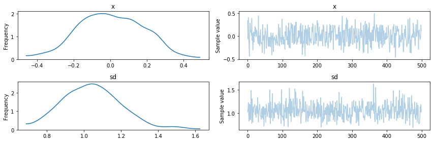
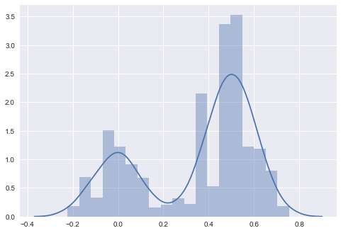

%matplotlib inline
import matplotlib.pyplot as plt
import matplotlib.cm as cmap
cm = cmap.inferno
import numpy as np
import scipy as sp
import seaborn as sns
import theano
import theano.tensor as tt
import theano.tensor.nlinalg
import pymc3 as pmWe recently released PyMC3 3.1 after the first stable 3.0 release in January 2017. You can update either via pip install pymc3 or via conda install -c conda-forge pymc3.
A lot is happening in PyMC3-land. One thing I am particularily proud of is the developer community we have built. We now have around 10 active core contributors from the US, Germany, Russia, Japan and Switzerland. Specifically, since 3.0, Adrian Seyboldt, Junpeng Lao and Hannes Bathke have joined the team. Moreover, we have 3 Google Summer of Code students: Maxime Kochurov, who is working on Variational Inference; Bill Engels, who is working on Gaussian Processes, and Bhargav Srinivasa is implementing Riemannian HMC.
Moreover, PyMC3 is being seeing increased adoption in academia, as well as in industry.
Here, I want to highlight some of the new features of PyMC3 3.1.
Discourse forum + better docs
To facilitate the community building process and give users a place to ask questions we have a launched a discourse forum: http://discourse.pymc.io. Bug reports should still onto the Github issue tracker, but for all PyMC3 questions or modeling discussions, please use the discourse forum.
There are also some improvements to the documentation. Mainly, a quick-start to the general PyMC3 API, and a quick-start to the variational API.
Gaussian Processes
PyMC3 now as high-level support for GPs which allow for very flexible non-linear curve-fitting (among other things). This work was mainly done by Bill Engels with help from Chris Fonnesbeck. Here, we highlight the basic API, but for more information see the full introduction.
np.random.seed(20090425)
n = 20
X = pm.floatX(np.sort(3*np.random.rand(n))[:,None])
# generate fake data from GP with white noise (with variance sigma2)
y = pm.floatX(
np.array([ 1.36653628, 1.15196999, 0.82142869, 0.85243384, 0.63436304,
0.14416139, 0.09454237, 0.32878065, 0.51946622, 0.58603513,
0.46938673, 0.63876778, 0.48415033, 1.28011185, 1.52401102,
1.38430047, 0.47455605, -0.21110139, -0.49443319, -0.25518805])
)Z = pm.floatX(np.linspace(0, 3, 100)[:, None])
with pm.Model() as model:
# priors on the covariance function hyperparameters and noise
l = pm.Uniform('l', 0, 10)
log_s2_f = pm.Uniform('log_s2_f', lower=-10, upper=5)
log_s2_n = pm.Uniform('log_s2_n', lower=-10, upper=5)
f_cov = tt.exp(log_s2_f) * pm.gp.cov.ExpQuad(1, l)
# Instantiate GP
y_obs = pm.gp.GP('y_obs', cov_func=f_cov, sigma=tt.exp(log_s2_n),
observed={'X': X, 'Y': y})
trace = pm.sample()
# Draw samples from GP
gp_samples = pm.gp.sample_gp(trace, y_obs, Z, samples=50, random_seed=42)Auto-assigning NUTS sampler...
Initializing NUTS using ADVI...
Average Loss = 27.649: 6%|▌ | 12091/200000 [00:09<02:15, 1386.23it/s]
Convergence archived at 12100
Interrupted at 12,100 [6%]: Average Loss = 9,348
100%|██████████| 1000/1000 [00:20<00:00, 49.74it/s]
100%|██████████| 50/50 [00:12<00:00, 3.93it/s]fig, ax = plt.subplots(figsize=(9, 5))
[ax.plot(Z, x, color=cm(0.3), alpha=0.3) for x in gp_samples]
# overlay the observed data
ax.plot(X, y, 'ok', ms=10);
ax.set(xlabel="x", ylabel="f(x)", title="Posterior predictive distribution");
Improvements to NUTS
NUTS is now identical to Stan’s implementation and also much much faster. In addition, Adrian Seyboldt added higher-order integrators, which promise to be more efficient in higher dimensions, and sampler statistics that help identify problems with NUTS sampling.
In addition, we changed the default kwargs of pm.sample(). By default, the sampler is run for 500 iterations with tuning enabled (you can change this with the tune kwarg), these samples are then discarded from the returned trace. Moreover, if no arguments are specified, sample() will draw 500 samples in addition to the tuning samples. So for almost all models, just calling pm.sample() should be sufficient.
with pm.Model():
mu1 = pm.Normal("mu1", mu=0, sd=1, shape=1000)
trace = pm.sample(discard_tuned_samples=False) # do not remove tuned samples for the plot belowAuto-assigning NUTS sampler...
Initializing NUTS using ADVI...
Average Loss = 7.279: 14%|█▍ | 28648/200000 [00:08<00:53, 3176.47it/s]
Convergence archived at 28900
Interrupted at 28,900 [14%]: Average Loss = 8.9536
100%|██████████| 1000/1000 [00:03<00:00, 263.60it/s]trace now has a bunch of extra parameters pertaining to statistics of the sampler:
fig, ax = plt.subplots(figsize=(8, 5))
ax.plot(trace['step_size_bar']); ax.set(xlabel='iteration', ylabel='step size');
Variational Inference
Maxim “Ferrine” Kochurov has done outstanding contributions to improve support for Variational Inference. Essentially, Ferrine has implemented Operator Variational Inference (OPVI) which is a framework to express many existing VI approaches in a modular fashion. He has also made it much easier to supply mini-batches. See here for a full overview of the capabilities.
Specifically, PyMC3 supports the following VI methods: * Auto-diff Variational Inference (ADVI) mean-field * ADVI full rank * Stein Variational Gradient Descent (SVGD) * Armortized SVGD
In addition, Ferrine is making great progress on adding Flows which allows learning very flexible transformations of the VI approximation to learn more complex (i.e. non-normal) posterior distributions.
x = np.random.randn(10000)
x_mini = pm.Minibatch(x, batch_size=100)
with pm.Model():
mu = pm.Normal('x', mu=0, sd=1)
sd = pm.HalfNormal('sd', sd=1)
obs = pm.Normal('obs', mu=mu, sd=sd, observed=x_mini)
vi_est = pm.fit() # Run ADVI
vi_trace = vi_est.sample() # sample from VI posteriorAverage Loss = 149.38: 100%|██████████| 10000/10000 [00:01<00:00, 9014.13it/s]
Finished [100%]: Average Loss = 149.33plt.plot(vi_est.hist)
plt.ylabel('ELBO'); plt.xlabel('iteration');
pm.traceplot(vi_trace);
As you can see, we have also added a new high-level API in the spirit of sample: pymc3.fit() with many configuration options:
help(pm.fit)Help on function fit in module pymc3.variational.inference:
fit(n=10000, local_rv=None, method='advi', model=None, random_seed=None, start=None, inf_kwargs=None, **kwargs)
Handy shortcut for using inference methods in functional way
Parameters
----------
n : `int`
number of iterations
local_rv : dict[var->tuple]
mapping {model_variable -> local_variable (:math:`\mu`, :math:`\rho`)}
Local Vars are used for Autoencoding Variational Bayes
See (AEVB; Kingma and Welling, 2014) for details
method : str or :class:`Inference`
string name is case insensitive in {'advi', 'fullrank_advi', 'advi->fullrank_advi', 'svgd', 'asvgd'}
model : :class:`pymc3.Model`
PyMC3 model for inference
random_seed : None or int
leave None to use package global RandomStream or other
valid value to create instance specific one
inf_kwargs : dict
additional kwargs passed to :class:`Inference`
start : `Point`
starting point for inference
Other Parameters
----------------
frac : `float`
if method is 'advi->fullrank_advi' represents advi fraction when training
kwargs : kwargs
additional kwargs for :func:`Inference.fit`
Returns
-------
:class:`Approximation`
SVGD for example is an algorithm that updates multiple particles and is thus well suited for multi-modal posteriors.
with pm.Model():
pm.NormalMixture('m',
mu=np.array([0., .5]),
w=np.array([.4, .6]),
sd=np.array([.1, .1]))
vi_est = pm.fit(method='SVGD')
vi_est = vi_est.sample(5000)100%|██████████| 10000/10000 [00:24<00:00, 407.10it/s]sns.distplot(vi_est['m'])<matplotlib.axes._subplots.AxesSubplot at 0x12f335208>
Cholesky factorization
There is a nice trick to covariance estimation using the Cholesky decomposition for increased efficiency and numerical stability. The MvNormal distribution now accepts a Cholesky-factored covariance matrix. In addition, the LKJ prior has been changed to provide the Cholesky covariance matrix. Thus, if you are estimating covariances, definitely use this much improved parameterization.
n_dim = 5
data = np.random.randn(100, n_dim)
with pm.Model() as model:
# Note that we access the distribution for the standard
# deviations, and do not create a new random variable.
sd_dist = pm.HalfCauchy.dist(beta=2.5)
packed_chol = pm.LKJCholeskyCov('chol_cov', eta=2, n=n_dim,
sd_dist=sd_dist)
chol = pm.expand_packed_triangular(n_dim, packed_chol, lower=True)
# Define a new MvNormal with the given covariance
vals = pm.MvNormal('vals', mu=np.zeros(n_dim),
chol=chol, shape=n_dim,
observed=data)
trace = pm.sample()Auto-assigning NUTS sampler...
Initializing NUTS using ADVI...
Average Loss = 716.37: 8%|▊ | 15309/200000 [00:05<01:06, 2768.80it/s]
Convergence archived at 15400
Interrupted at 15,400 [7%]: Average Loss = 2,171.4
100%|██████████| 1000/1000 [00:06<00:00, 160.64it/s]Live-trace to see sampling in real-time
This one is really cool, you can watch the trace evolve while its sampling using pm.sample(live_plot=True). Contributed by David Brochart. See here for full docs.
Better display of random variables
We now make use of the fancy display features of the Jupyter Notebook to provide a nicer view of RVs:
with pm.Model():
μ = pm.Normal('μ', mu=0, sd=1)
σ = pm.HalfNormal('σ', sd=1)
γ = pm.Normal('γ', mu=μ, sd=σ, observed=np.random.randn(100))γ\(γ \sim \text{Normal}(\mathit{mu}=μ, \mathit{sd}=f(σ))\)
You can create greek letters in the Jupyter Notebook by typing the \(\LaTeX\) command and hitting tab: .
GPU support (experimental)
While still experimental, we have made a lot of progress towards fully supporting float32 throughout. If you set floatX = float32 in your .theanorc, cast all your input data to float32 (e.g. by using pm.floatX() for automatic casting), you should get much faster inference. If you set the backend to use the GPU, you should get a nice speed-up on the right types of models. Please report any successes or failures in this regard.
Other useful packages
These are not part of PyMC3 3.1 but build on it and should be of interest to many users.
Bayesian Deep Learning with Gelato
Gelato bridges PyMC3 and Lasagne, a library to easily build Neural Networks similar to Keras. Building Bayesian convolution neural networks and estimating them using VI has never been simpler. See here for an example on MNIST.
Building hierarchical GLMs with Bambi
Bambi is a new package on top of PyMC3 (they also recently added a Stan backend) which allows creation of complex, hierarchical GLMs with very intuitive syntax, e.g.:
model.fit('rt ~ condition', random=['condition|subject', '1|stimulus'], samples=5000, chains=2).
Looking towards PyMC3 3.2
PyMC3 3.2 is already underway. Some of the features we are working on include: * faster sampling on the GPU, * Stochastic Gradient Fisher Scoring for scalable min-batch MCMC, * Normalizing Flows for flexible variational inference on non-normal posteriors, * scalable GPs, * support for the emcee sampler, and * Riemannian HMC for efficient sampling in high-dimensional complex spaces.
On my own behalf: Patreon
I have recently created an account on Patreon where you can support me financially for writing blog posts. These allow me to devote more time to writing posts so if you find this blog useful, please consider supporting me.
Thanks specifically to Jonathan Ng for pledging.